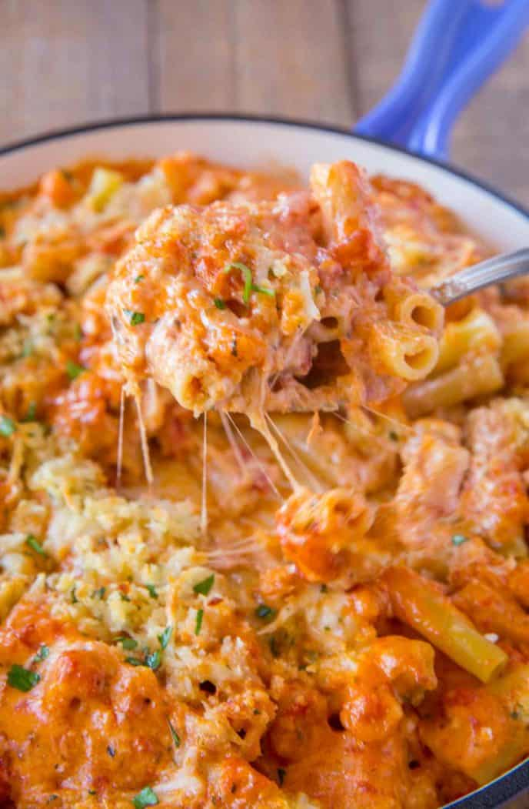

Pasta Bake

Description
This recipe is my personal favorite! It is based on Olive Garden's Five Cheese Ziti al Forno. Alfredo sauce, marinara, ricotta, and mozzarella all work together to make a dish you want to enjoy again and again!
Ingredients
- 1 Pound of Pasta (Ziti, Rigatoni, or Penne)
- 4 Cups of Marinara
- 2 Cups of Alfredo Sauce
- 1/2 Cup of Ricotta Cheese
- 2 Cups of Shredded Mozzarella Cheese
- 1/2 Cup of Breadcrumbs
- 1/2 Cup of Grated Paremsan Cheese
- 2 Cloves of Garlic
Steps
- Preheat oven to 375 degrees F.
- Fill a large pot with water and set to boil.
- In the meantime, mince garlic.
- Generously salt water once boiling and add pasta.
- Cook pasta about a minute shy of instructions on box.
- Add pasta, marinara, alfredo, and ricotta to a large mixing bowl and mix thoroughly.
- Mix breadcrumbs, mozzarella, parmesan, and garlic in a medium mixing bowl.
- Add pasta mix to large casserole dish.
- Top pasta evenly with breadcrumb mixture.
- Bake for 30 minutes or until golden brown and bubbly.
- Let cool for 5 minutes and enjoy!